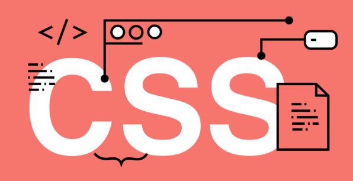

CSS EXPLICACION
con background se configura lo de detras es decir ordenar la web
con background-size puedes poner algo en el fondo y con cover le puedes poner que se ajuste y con cover segun el ancho de el navejador se modifica
para que no se repita una imagen o algo se hace con background-repeat y no-repeat
ahora con background-position puedes decir donde poner a una imagen o fondo de texto
con margin le pones margenes a un texto y con border tambien puedes poner el Borde junto a ese margen
con padding pones margen desde DENTRO DEL TEXTO
si lo ajustas y el ajuste no deja ver una imagen , tienes que usar overflow: hidden para ocultarlo o para un scroll pues scroll
outline es para hacer border pero despues del borde
text aline , esto es para centrar el texto donde quieras
para cambiar la fuente de texto sera con font-family
con hover puedes detectar si pasa alguien el raton por encima y lo puedes destacar
para poner cuando pasas por algun lado el cursor de la manita es con cursor: pointer;
para ids en css hay que usar el # y para class un .
con max-width pones que sea un maximo y si el navejador es mas pequeno se hara pequeno
con fixed SE QUEDA SIEMPRE ALGO EN LA PANTALLA
con float pudes poner texto en la izquierda o en la derecha , es igual
Ahora hare el blog personalizado con el video
video del blog